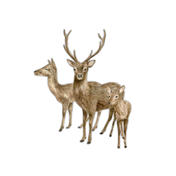
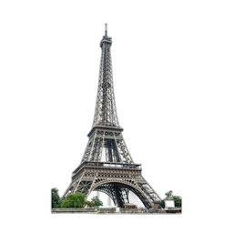
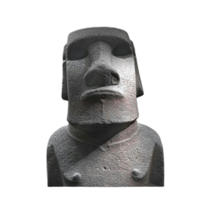
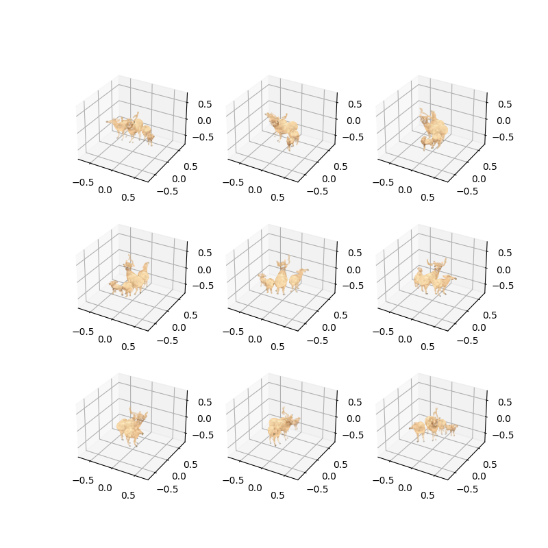
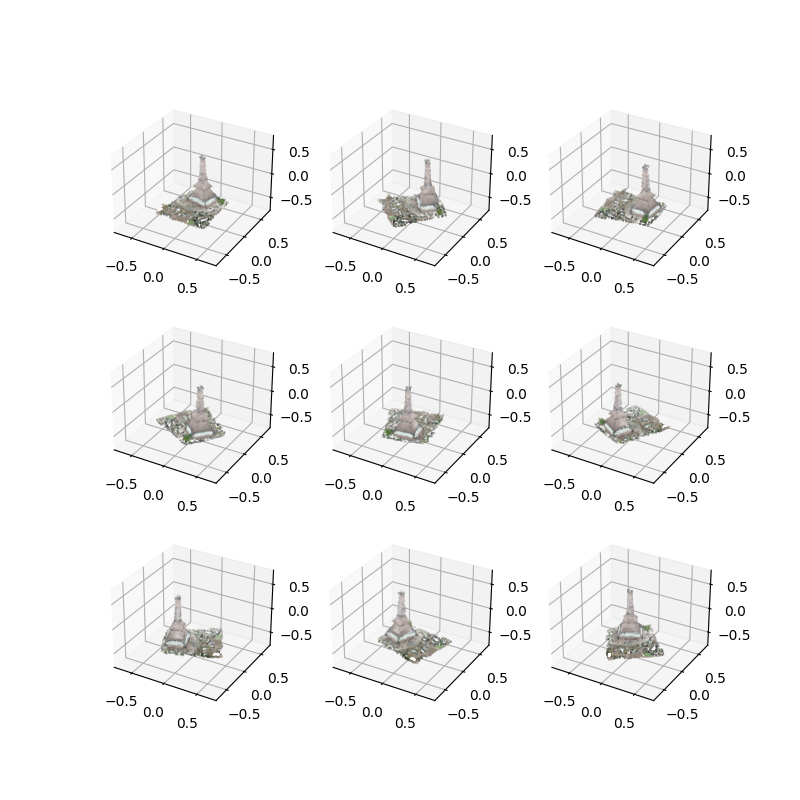
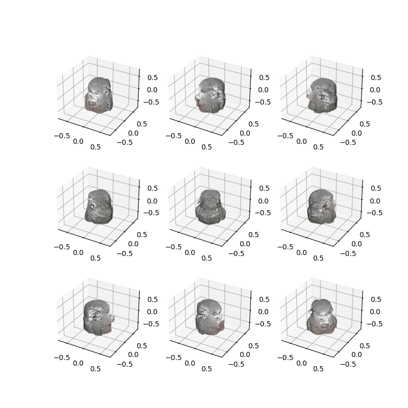
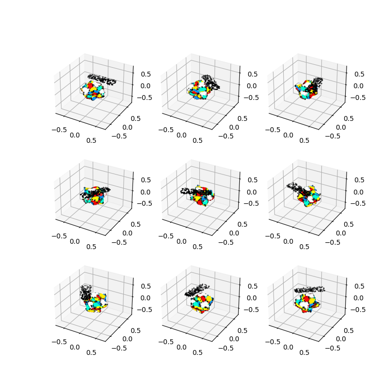

Point-E 3D point cloud model
Our method and preliminary results are shown in the figure below. All of the images were generated using the Point-E 1B model, with 1024 points and a 40M parameter model for upsampling to 4096 points. In general, we find that the 300M and 1B model have comparable performance; for future prompts, we intend to use the 300M model due to computational cost.

Below are some demonstrations of our approach. We find that Point-E 300M is sufficient for most use cases but may miss fine-grained detail. Point-E 1B captures some of this, but has some common failure modes, i.e. points are overly concentrated in some regions, or do not model the shapes of the objects well. However, we see through the modeling of disjoint objects in the family of deer that Point-E learns fairly strong priors.
|  |  |  | |
|  |  |  |  |
Flocking
We wrote a basic flocking algorithm in Unity and C# with Separation, Cohesion, Alignment, Containment, and Arrival forces using the modified Euler method for simulation. For each force we have a different radius and we are computing neighborhoods that ignore boids behind the current boid to simulate line of sight. We’ve also spent time trying to tweak the parameters for each of these to achieve a presentable simulation.
We have a script to convert npz files into jsons that can be read by C# or C++ to load in target positions for the Arrival force of each boid.
Ray marching
We have programmed a ray marching algorithm, in the hopes of optimizing rendering
Also decided to use the camera and GUI codebase from homework 3 to test our implementation.
Instead of rendering one image at a time with the camera in one position, we wanted our display to continuously render new images in real time with the ability to also change the camera position in between rendering.
We were able to achieve this by editing the rendering files in application.cpp. The resulting display renders images a bit slowly, but we believe we can improve the rendering time by adding BVH to our ray marching algorithm